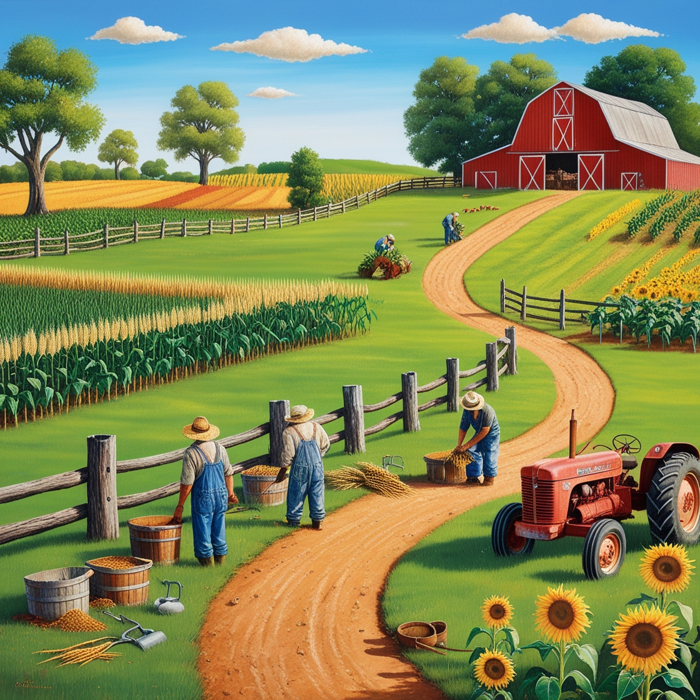

Agriculture is the backbone of human civilization and one of the most essential industries. It involves cultivating soil, growing crops, and raising animals to produce food, fiber, and other products. Agriculture has evolved significantly over centuries, from traditional methods to modern techniques, which now include advanced machinery, biotechnology, and sustainable practices.
Globally, agriculture provides livelihoods for billions of people and is integral to the economy of many nations. It not only ensures food security but also contributes to the production of raw materials for industries, such as textiles and biofuels. The importance of agriculture extends beyond economics, influencing cultural traditions and fostering connections between communities and nature.
Sustainable agriculture practices are gaining prominence to address challenges like climate change, soil degradation, and water scarcity. By adopting eco-friendly techniques, such as organic farming and crop rotation, farmers can protect natural resources and ensure long-term productivity.